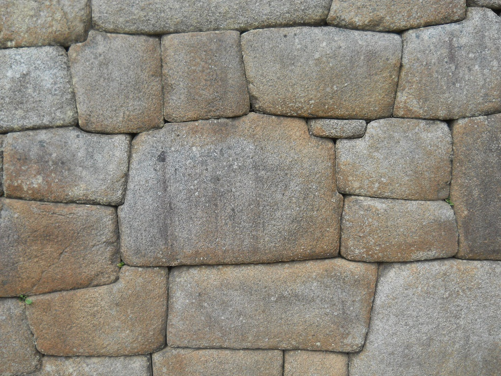
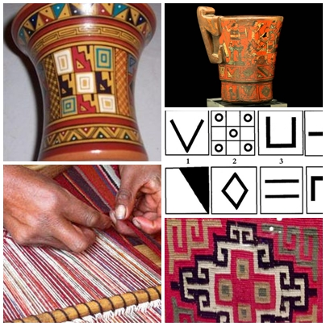

Imperio Inca
Se divide en dos fases:- Imperio legendario (desde el s. XIII hasya 1438)donde se mezclan los ritos y la realidad. Destaca la figura de Pachacútec, el noveno gobernante, quien convirtió el estado Inca en un Imperio.
- Imperio histórico, desde la creación del Imperio con Pachacútec hasta el fin de la guerra civil entre Huáscar y Atahualpa con la llegada de Pizarro.

La iconografía inca se puede observar en obras menores como cerámicas (de influencia Chavín), textiles (de influencia Paracas), orferberia, pero a diferencia de las culturas anteriores no dan importancia a la escultura. Es interesante observar que la característica principal son los motivos geométricos, simples o en ocasiones la geometrización de la flora, la fauna y las personas. Algunos estudios afirman que la decoración tocapu, compuesta de cuadrados en series con dibujos en su interior, equivalen a un lenguaje gráfico.